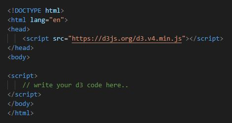

Barebones Presentation
This example contains the bare minimum includes and markup required to run a reveal.js presentation.
D3.js (Data-Driven-Documents)

What it is?
D3.js (Data-Driven-Documents) is an open-source JavaScript library that lets you create dynamic data visualizations in web browsers using SVC, HTML 5, and CSS. It was created by Mike Bostock in 2011 as a spiritual successor to Protovis. D3.js specializes in representing large data sets in a digestible and interactive means.
What it is?
D3.js visualizations are created entirely using JavaScript. This allows frontend developers to add advanced data visualization to their UIs without the hassle of learning a new language.
Many advanced data manipulation and visualization functions are built-in and implemented, meaning that a new D3.js user can create effects that would otherwise require years of experience.
For example, D3.js features built-in graph styles for anything from a simple pie chart to an interactive circular barplot.
Data visualization helps to:
- Make quick decisions based on large data sets
- Understand overarching market trends
- Communicate information at a glance
- Find errors in recorded data
Top Features of D3.js
- Web Standards: Uses the established standards SVG, HTML, and CSS to make it compatible with existing technologies.
- Data-Driven: D3 can use static data or fetch it from remote servers in several formats like Arrays, Objects, CSV, JSON, or XML.
- DOM Manipulation: D3 allows you to manipulate the Document Object Model (DOM) using your data.
- Properties: D3 provides dynamic properties and elements. Properties can be specified as functions of data which then edit your elements. In other words, your data defines the style of your visualization.
Top Features of D3.js
- Types of visualization: D3 features dozens of built-in graph formats for common applications like ranking, correlation, and distribution.
- Custom Visualizations: D3 allows you to create custom visualizations from scratch or by tweaking current graph formats.
- Transitions and Animation: D3 provides built-in animation functions the transition(), duration(), delay() and ease() functions, which automatically animate features of your graph based on user interaction, timed transitions, or other events.
D3.js Set up
You’ll have to set up a D3.js environment before you get hands-on. The four components of a D3.js environment are the D3 library, a web server, a text editor, and a web browser. You can use the D3 library by linking it directly to your HTML page from the Content Delivery Network (CDN). Using CDN will allow you to work with D3 without downloading the source code.
D3.js Set up
Include D3 by entering the CDN url for D3 in your head section: 
Fundamental components of D3.js
- Selections, used to select DOM elements for manipulation
- DOM manipulation, used to add or modify text within DOM elements
- Method Chaining, used to create a pipeline of methods that each transform an object.
- Data Joins, used to bind data to a selected element to make data-based manipulations easier.
D3 Selections
Selection is the beginning of most D3 method chains as it dictates which elements will be affected by later methods. There are two methods for selection in D3.js, select() and selectAll().
Select()
The select() method is used to select a single instance of a given HTML tag. If multiple instances of the selected tag are present, then it will select the first element only.
SelectAll()
The other method for selection is selectAll() which allows you to select multiple instances of an HTML tag. If multiple instances are present, it will select all of them. If the tag is not present, it will return an empty selection.
EXAMPLE
There's no theme included, so it will fall back on browser defaults.